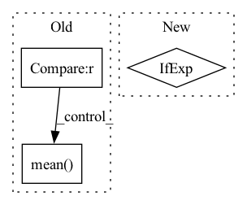

Pattern ID :22738
Before Change
if log_interval is not None and self._episode_num % log_interval == 0:
self._dump_logs()
mean_reward = np.mean( episode_rewards) if num_collected_episodes > 0 else 0.0
callback.on_rollout_end()
After Change
self._episode_num += 1
if action_noise is not None:
kwargs = dict(indices=[idx]) if env.num_envs > 1 else {}
action_noise.reset(**kwargs)
// Log training infosIn pattern: SUPERPATTERN
Frequency: 3
Non-data size: 3
Instances Fragment ID: 72197576
Project Name: dlr-rm/stable-baselines3
Commit Name: 507ed1762e62bd6c4e85ea572ba166b69116b1ac
Time: 2021-12-01
Author: antonin.raffin@ensta.org
File Name: stable_baselines3/common/off_policy_algorithm.py
M Class Name: OffPolicyAlgorithm
N Class Name: OffPolicyAlgorithm
M Method Name: collect_rollouts(8)
N Method Name: collect_rollouts(8)
M Parent Class: BaseAlgorithm
N Parent Class: BaseAlgorithm
M File Name: stable_baselines3/common/off_policy_algorithm.py
N File Name: stable_baselines3/common/off_policy_algorithm.py
M Start Line: 544
M End Line: 619
N Start Line: 565
N End Line: 628
Before Change
x = self.temporal_transformer(x)
x = x.mean(dim = 1) if self.pool == "mean" else x[:, 0]
x = self.to_latent(x)
return self.mlp_head(x)After Change
// excise out the spatial cls tokens or average pool for temporal attention
x = x[:, :, 0] if not self.global_average_pool else reduce(x, "b f n d -> b f d", "mean")
// append temporal CLS tokens
Fragment ID: 72197575
Project Name: lucidrains/vit-pytorch
Commit Name: 6ec8fdaa6dc114b3789b80635a64b126756c02c8
Time: 2022-10-24
Author: lucidrains@gmail.com
File Name: vit_pytorch/vivit.py
M Class Name: ViT
N Class Name: ViT
M Method Name: forward(2)
N Method Name: forward(2)
M Parent Class: nn.Module
N Parent Class: nn.Module
M File Name: vit_pytorch/vivit.py
N File Name: vit_pytorch/vivit.py
M Start Line: 139
M End Line: 166
N Start Line: 144
N End Line: 180
Before Change
assert phase in ["Gmain", "Greg", "Gboth", "Dmain", "Dreg", "Dboth"]
do_Gmain = (phase in ["Gmain", "Gboth"])
do_Dmain = (phase in ["Dmain", "Dboth"])
do_Gpl = (phase in ["Greg", "Gboth"]) and (self.pl_weight != 0)
do_Dr1 = (phase in ["Dreg", "Dboth"]) and (self.r1_gamma != 0)
loss_numpy = {}
// Gmain: Maximize logits for generated images.
if do_Gmain:
gen_img, _gen_ws = self.run_G(gen_z, gen_c, sync=(sync and not do_Gpl)) // May get synced by Gpl.
// d_gen_ws_dgen_z = torch.autograd.grad(outputs=[_gen_ws.sum()], inputs=[gen_z], create_graph=True, only_inputs=True)[0]
// aaaaaaaaaa0 = dic2[phase + "d_gen_ws_dgen_z"]
// aaaaaaaaaa1 = d_gen_ws_dgen_z.cpu().detach().numpy()
// ddd = np.mean((dic2[phase + "d_gen_ws_dgen_z"] - d_gen_ws_dgen_z.cpu().detach().numpy()) ** 2)
// print("ddd=%.6f" % ddd)
// aaaaaaaaa1 = dic2[phase + "gen_img"]
// aaaaaaaaa2 = gen_img.cpu().detach().numpy()
// ddd = np.mean((dic2[phase + "gen_img"] - gen_img.cpu().detach().numpy()) ** 2)
// print("ddd=%.6f" % ddd)
// ddd = np.mean((dic2[phase + "_gen_ws"] - _gen_ws.cpu().detach().numpy()) ** 2)
// print("ddd=%.6f" % ddd)
gen_logits = self.run_D(gen_img, gen_c, sync=False)
// ddd = np.mean((dic2[phase + "gen_logits"] - gen_logits.cpu().detach().numpy()) ** 2)
// print("ddd=%.6f" % ddd)
loss_Gmain = torch.nn.functional.softplus(-gen_logits) // -log(sigmoid(gen_logits))
loss_Gmain = loss_Gmain.mean()
loss_numpy["loss_Gmain"] = loss_Gmain.cpu().detach().numpy()
loss_G = loss_Gmain
loss_G = loss_G * float(gain)
loss_G.backward() // 咩酱：gain即上文提到的这个阶段的训练间隔。
// Gpl: Apply path length regularization.
if do_Gpl:
// print("----------------- do_Gpl -----------------")
batch_size = gen_z.shape[0] // self.pl_batch_shrink
batch_size = max(batch_size, 1)
// with misc.ddp_sync(self.G_flownet, sync):
// flow = self.G_flownet(torch.cat((cloth[:batch_size], aff_pose[:batch_size]), dim=1))
// warp_cloth = F.grid_sample(cloth[:batch_size, :3, :, :], flow)
gen_c_ = None
if gen_c is not None:
gen_c_ = gen_c[:batch_size]
gen_img, gen_ws = self.run_G(gen_z[:batch_size], gen_c_, sync=sync)
// ddd = np.mean((dic2[phase + "gen_img"] - gen_img.cpu().detach().numpy()) ** 2)
// print("ddd=%.6f" % ddd)
// ddd = np.mean((dic2[phase + "gen_ws"] - gen_ws.cpu().detach().numpy()) ** 2)
// print("ddd=%.6f" % ddd)
pl_noise = torch.randn_like(gen_img) / np.sqrt(gen_img.shape[2] * gen_img.shape[3])
// pl_noise = torch.ones_like(gen_img) / np.sqrt(gen_img.shape[2] * gen_img.shape[3])
pl_grads = torch.autograd.grad(outputs=[(gen_img * pl_noise).sum()], inputs=[gen_ws], create_graph=True, only_inputs=True)[0]
pl_lengths = pl_grads.square().sum(2).mean(1).sqrt()
// ddd = np.mean((dic2[phase + "pl_grads"] - pl_grads.cpu().detach().numpy()) ** 2)
// print("ddd=%.6f" % ddd)
// ddd = np.mean((dic2[phase + "pl_lengths"] - pl_lengths.cpu().detach().numpy()) ** 2)
// print("ddd=%.6f" % ddd)
if self.pl_mean is None:
self.pl_mean = torch.zeros([1, ], dtype=torch.float32, device=pl_lengths.device)
pl_mean = self.pl_mean.lerp(pl_lengths.mean(), self.pl_decay)
self.pl_mean.copy_(pl_mean.detach())
pl_penalty = (pl_lengths - pl_mean).square()
loss_Gpl = pl_penalty * self.pl_weight
loss_Gpl = (gen_img[:, 0, 0, 0] * 0 + loss_Gpl).mean() * float(gain)
loss_numpy["loss_Gpl"] = loss_Gpl.cpu().detach().numpy()
loss_Gpl.backward() // 咩酱：gain即上文提到的这个阶段的训练间隔。
After Change
phase = {"Greg": "none", "Gboth": "Gmain"}.get(phase, phase)
if self.r1_gamma == 0:
phase = {"Dreg": "none", "Dboth": "Dmain"}.get(phase, phase)
blur_sigma = max(1 - cur_nimg / (self.blur_fade_kimg * 1e3), 0) * self.blur_init_sigma if self.blur_fade_kimg > 0 else 0
loss_numpy = {}
Fragment ID: 72197574
Project Name: miemie2013/miemiegan
Commit Name: c5e7ecffe23cf2fc2613ee06ec8fd94c8d7230ac
Time: 2022-03-24
Author: 53960695+miemie2013@users.noreply.github.com
File Name: mmgan/models/architectures/styleganv3_model.py
M Class Name: StyleGANv3Model
N Class Name: StyleGANv3Model
M Method Name: accumulate_gradients(9)
N Method Name: accumulate_gradients(9)
M Parent Class: torch.nn.Module
N Parent Class: torch.nn.Module
M File Name: mmgan/models/architectures/styleganv3_model.py
N File Name: mmgan/models/architectures/styleganv3_model.py
M Start Line: 140
M End Line: 251
N Start Line: 140
N End Line: 251